|
Gode
Cookery on the Food Network
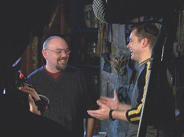
Gode Cookery's Jim Matterer & Food Network's Jim O'Connor. In early 2005 we were contacted by Stanley Brown & Kerry Lambert from Greystone TV about a 2nd season episode of the Food Network series, "The Secret Life of...", involving the history of birthday cakes & parties. Jim Matterer & Tammy Crawford agreed to meet with their film crew and host Jim O'Connor at the beautiful & historic Century Inn in Scenery Hill, Pennsylvania, site of last year's segment on trenchers shown in "The Secret Life of Sandwiches," which also featured Gode Cookery. (Information and pictures from 2004's taping is HERE.) Taping took place on February 10th. The subject was Roman Birthday Cakes - more realistically, on cakes used by Romans during celebrations, including birthdays. Jim & Tammy prepared for Jim O'Connor wine cakes, used by the Romans as libations to the gods & goddesses, and one of the more common cakes of the Roman period. 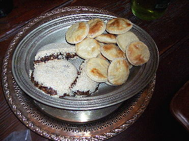
Here are the wine cakes made by Jim for the show, on the right; on the left is a nut cake made by Tammy, also featured. Here is the recipe Jim created for the show: Roman Wine Cakes
Dissolve the yeast and sugar in the wine; set aside. In a large bowl, mix together with your hands the flour and oil until it resembles course sand. Add the wine/yeast mixture and mix with hands until a ball of dough is formed. Add a little more flour if necessary. This should resemble bread or biscuit dough - stretchy & rubbery, but not too sticky. On a floured surface, knead the dough slightly until uniform in texture. Roll out on a floured surface into a flat, thin round. With a circular cutter approx. 1 1/2 inch in diameter, cut out small rounds of dough. Transfer with a floured spatula onto a baking sheet lined with parchment paper. Re-roll any leftover dough and continue cutting rounds until all the dough is used. Brush the cakes with the egg white. Bake in oven for 20 minutes. Cool cakes on a wire rack. Garnish or eat with honey. Yield: 1 dozen. (Source documentation will be included soon, along with our research notes.) 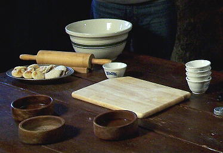
Another shot of the cakes, on left. And now, here are some pictures taking during the Feb. 10th taping! These photographs (and the ones above) are by Jim Matterer & Darell McCormick. 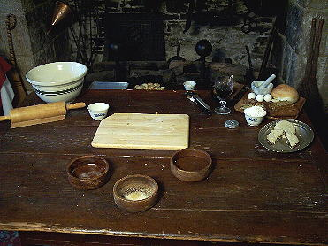
Our table set-up. 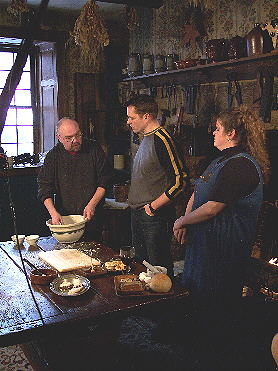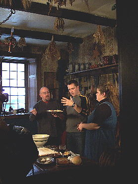 Jim, Jim O'Connor, & Tammy during the taping. 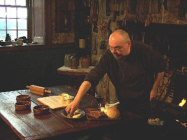 Fussing over the table. 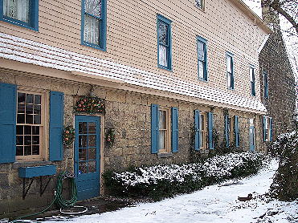 A picture of the exterior of the room used for the taping, on the left. 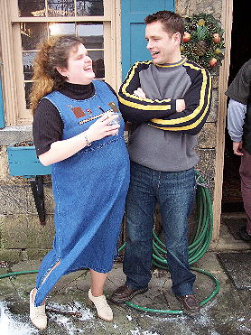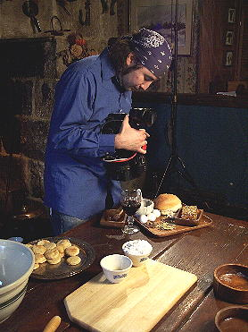 Tammy & Jim O'Connor share a moment; the Food Network cameraman at work. 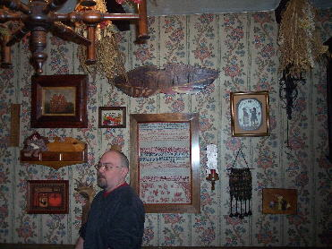 Jim cogitates during a lull in taping. 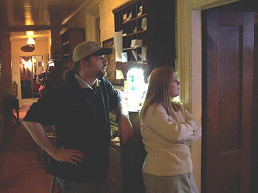 Troy Lamey & Jennifer Strobel observe the activity from a safe spot. 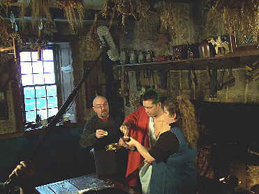 Jim O'Connor, suitably dressed, prepares to sample the final product. 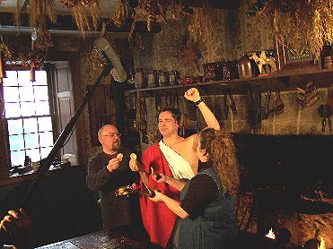 "Hail, Caesar!" Jim O'Connor declares the wine cakes good. Behind -the-Scenes Video! Taping in progress. Hail Ceasar! Jim O'Connor in a toga! These photographs are by Tammy Crawford. 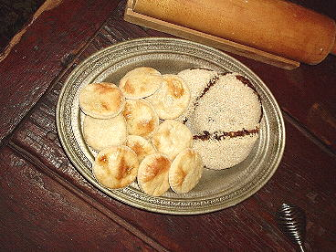
The wine cakes & the nut cake. 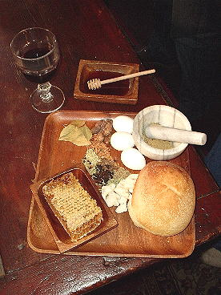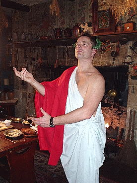 Roman food on the table; Jim O'Connor in his toga - made from the Inn's tablecloths! The Food Network webpage on this episode is at: http://www.foodnetwork.com/food/show_sf/episode/0,,FOOD_17616_37987,00.html |